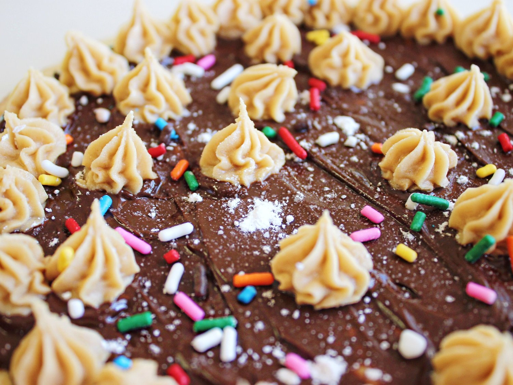
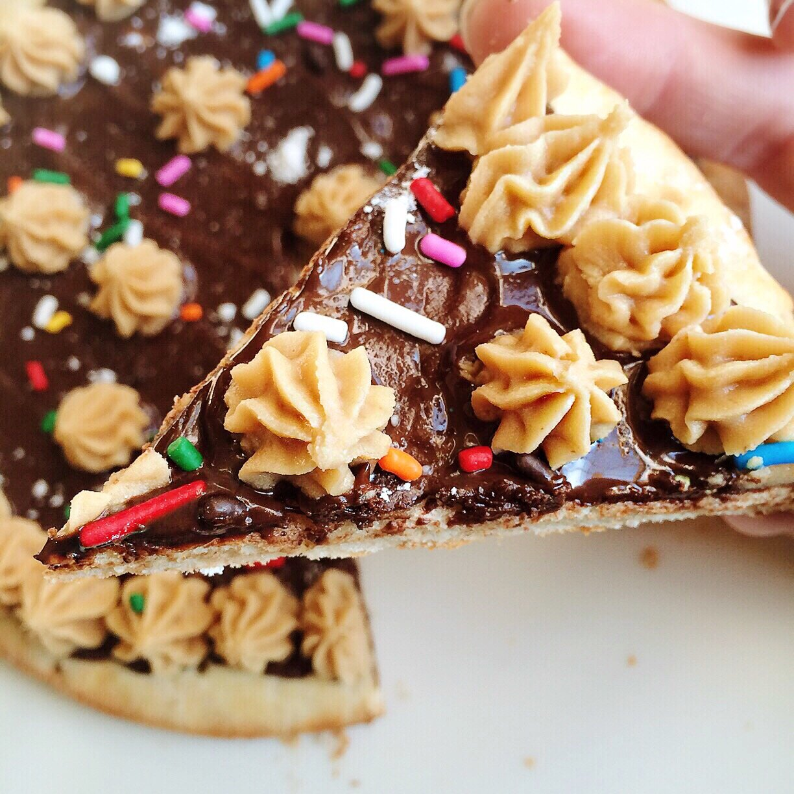
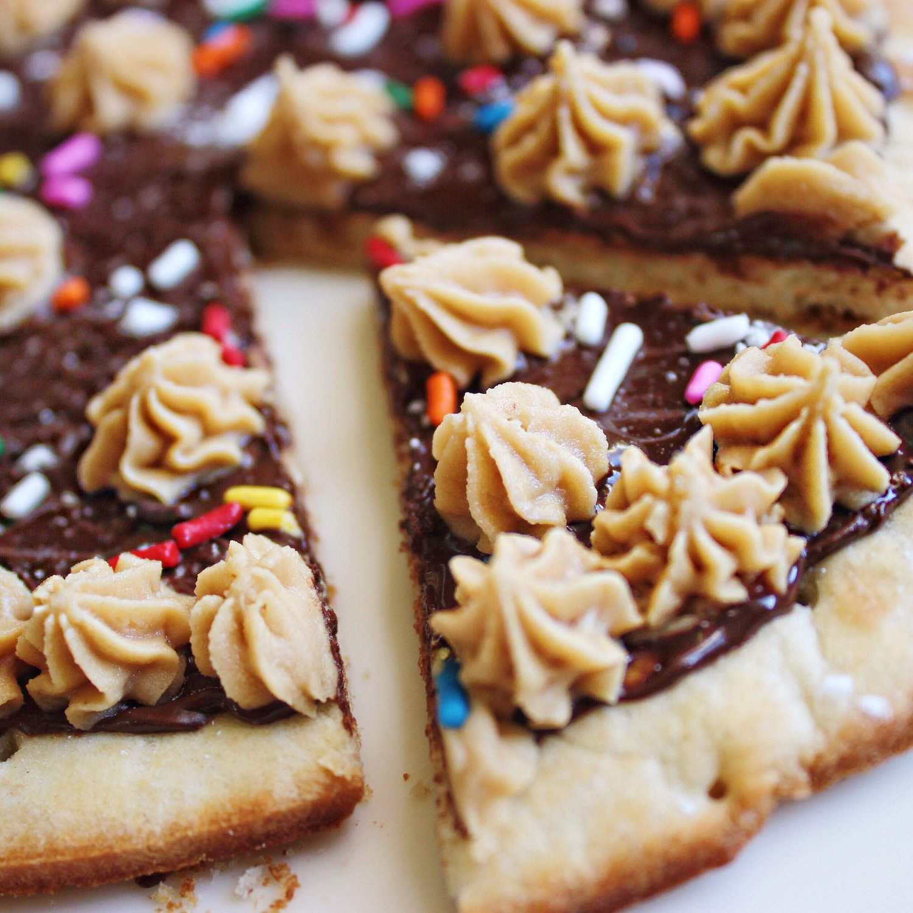

Chocolate Peanut Butter Dessert Pizza (vegan)


Mmhmm mhmmm. This is fantastic. I've made dessert pizza before by making my own base, but never have I made one with true pizza crust before. This is pretty miraculous. Like...let's think about this. There's 1) Pizza 2) Chocolate 3) Peanut Butter 4) Sprinkles. This is fool proof; everyone likes one of those 4 things. Am I right or am I right??
I showed this in a recent What I Ate Today vlog. Alsooo in the vlog... My first ever chipotle burrito!! It was SO good. Superrr filling though oh my goodness. The tofu they have is just so unique; I wish I knew how to make it. I am proud to be officially inducted into the chipotle burrito consumers club. Thank you, fellow members.
Anywho, back to the chocolate peanut butter dessert pizza! It can serve 2-4 depending on how much you're wanting. I have two servings and ate the whole thing in a day, ha. Irresistible. Try it out!
Chocolate Peanut Butter Dessert Pizza
Serves: 2
-
1 mini pizza crust (I used these here)
-
1 oz dark chocolate (dairy free)
-
1 TBSP syrup
-
1/2 serving vanilla Nuzest plant based protein
-
1/2 TBSP creamy peanut butter
-
1 stevia packet
-
sprinkles (optional)
Prepare the pizza crust as instructed to the package (for mine, I just baked for 8 minutes). While that is baking, melt the chocolate by microwaving for 30 seconds at a time, stirring each 30 seconds until fully melted. Spread the chocolate on the pizza base. Then, mix the syrup, protein powder, peanut butter, and stevia. Slowly add water to the mix and stir until the desired consistency forms. Do not add too much water! Once mixed but still thick, apply the peanut butter icing.
Top with sprinkles, and enjoy!! Serves 2 at approximately 300 calories a serving.
